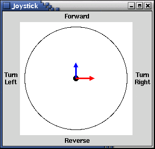
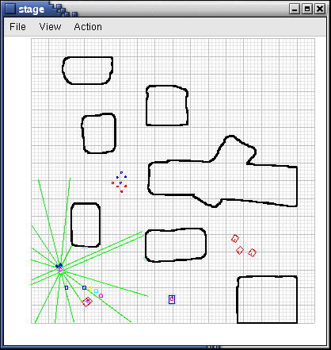
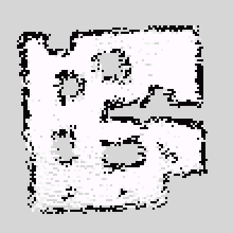

|
|||||||
| [ Home ] | [ Software ] | [ Curriculum ] | [ Hardware ] | [ Community ] | [ News ] | [ Publications ] | [ Search ] |
|
This is an introduction to mapping and localization. This module provides an overview of the issues in how the robot can map a buildings layout, and know where it is. When completed, the reader should be ready to further explore these core ideas.
Pyro Module MappingThis module is designed to allow a robot to create a map of its environment. This is done by combining Bayesian probabilities to create an occupancy grid representation of the environment. Each location in the occupancy grid contains a probability representing the robot's best estimate of whether that location is occupied. A probability of 0.5 indicates no knowledge about the location, a probability of less than 0.5 indicates that it is likely to be unoccupied, while a probability of greater than 0.5 indicates that it is likely to be occupied. In order for an occupancy grid based mapping system to be successful, a robot must be able to accurately estimate its current position and heading. This ability is known as localization. In a simulator, it is possible for the robot to know its exact location at all times, which is a very unrealistic assumption in the real world. The mapping system given here does not do localization, but assumes that the robot's estimate of its location is correct. This works well in simulation, but would need to be combined with a localization technique to be successful in the real world. This mapping system was written entirely in Python and the source can be accessed in the $PYROBOT/map/ directory. There are two classes that are necessary to use this module, the pyrobot.map.lps.LPS and pyrobot.map.gps.GPS classes. When used in combination, these two classes provide a powerful, yet simple to use mapping system. We will first examine the LPS class. This class is used to gain information about the Local Perceptual Space. What this means is that the LPS class reads and stores sensor information to create a mini-map of the robot's immediate surroundings. In the LPS, the robot only maps what is clearly visible at the current time, and no memory of past readings is stored. The LPS data is based on readings from a robot's range sensors. Each range sensor is assumed to return a distance to the nearest obstacle in its vicinity. If a range sensor returns its max distance, then we can assume that it does not sense any obstacles in its range. Therefore all of the locations along its line of perception should be unoccupied. However we cannot make any assumptions about the locations beyond its range. If a range sensor returns a value below its max distance, then we can assume that there is an obstacle at this distance. In addition, we can assume that the space in front of this distance is unoccupied, but again we can make no assumptions about what lies beyond this distance. The image below shows an example of the LPS for a simulated Pioneer robot. The robot is represented as a red circle at the center of the image and the attached blue square indicates its heading. Recall that a Pioneer robot is equipped with a set of 16 sonar sensors, which are numbered 0-15 below. The LPS is represented as a small occupancy grid, where the color of each grid location indicates its probability of being occupied: gray=unknown, white=unoccupied, black=occupied. Each white and black location is inscribed with a number indicating the sonar sensor that provided the information. For instance, sonars 4-5, 7-10, and 14 are all returning values at their max distance, while the remaining sonars are indicating hits at various distances from the robot. Based on this LPS information, the robot has mostly clear space on its right side, but is close to some obstacles on its left side.
The GPS class is slightly different. This class is used to gain information about the Global Perceptual Space. This basically means that, unlike the LPS class, the GPS class reads and stores information about the world and adds this to an already existing map of all previously visited areas of the world. This is done by reading sensor information directly from the LPS's local map and modifying the corresponding locations in the GPS's global map.
Maps: A Basic SkeletonWe will begin with a skeleton of a mapping program. The following brain is also provided as JoystickMap in the loadable brains directory.
from pyrobot.brain import *
from pyrobot.tools.joystick import Joystick
import pyrobot.system.share as share
from pyrobot.map.lps import LPS
from pyrobot.map.gps import GPS
import thread
class Map(Brain):
def setup(self):
# We want our map to measure in MM, so we first store our current unit of measure
units = self.robot.range.units
# We then reset our measurements to MMs
self.robot.range.units = 'MM'
# Calculate the maximum range of our sensors
rangeMaxMM = self.robot.range.getMaxvalue()
sizeMM = rangeMaxMM * 3 + self.robot.radius
# Reset our unit of measure
self.robot.range.units = units
# Now, we create our Local Perceptual Space window - this will hold our local map
# Map will be 20px by 20px and will represent a height and width of sizeMM (total sensor range)
self.lps = LPS( 40, 40,
widthMM = sizeMM,
heightMM = sizeMM)
# Then create our Global Perceptual Space window - this will hold our global map
# This map will be 500px by 500px and will represent an area ten times the size of our maximum range
self.gps = GPS( cols=300, rows=300,
heightMM = sizeMM * 5, widthMM = sizeMM * 5)
self.joystick = Joystick(share.gui)
self.need_redraw = False
self.lock = thread.allocate_lock()
def step(self):
if not self.lock.acquire(False):
return
#print "Stepping...",
# First we clear out all our old LPS data
self.lps.reset()
# Next we update our LPS with current 'range' sensor readings
self.lps.sensorHits(self.robot, 'range')
# Now redraw our LPS window - the LPS redraw can be improve performance
# Then update our GPS with the new information in the LPS
self.gps.updateFromLPS(self.lps, self.robot)
# Finally, we redraw the GPS window
self.need_redraw = True
self.move(self.joystick.translate, self.joystick.rotate)
self.lock.release()
#print "done stepping!"
def redraw(self):
if (not self.lock.acquire(False)):
return
#print "Redrawing...",
if self.need_redraw:
self.lps.redraw(drawLabels=False)
self.gps.update()
self.gps.redraw()
self.need_redraw = False
self.lock.release()
#print "done redrawing!"
def destroy(self):
# Make sure we close down cleanly
self.lps.destroy()
self.gps.destroy()
self.joystick.destroy()
def INIT(engine):
return Map("Mapping Brain", engine)
[
To test out this brain, start up Pyro, first select the Stage simulator and everything.world, next select the robot Player6665.py, and finally select the brain JoystickMap. Once you press the Run button, you can begin to move the robot around the environment using the joystick. To control the joystick, shown below, drag the mouse from the center of the circle toward the outside of the circle in the direction you wish the robot to move. In the example shown, the robot would be moving forward right. The further you go toward the outer edge of the circle, the faster the robot will move. If you let go of the mouse button the robot will stop.  Notice that initially the GPS window is empty, but that the LPS window will immediately display the robot's local view of the world. If you manage to joystick the robot throughout the entire environment, you'll see that the GPS window's results will closely resemble the actual environment as shown below. Like the LPS, the GPS is also an occupancy grid where the color of each grid location indicates its probability of being occupied.   |
| [ Home ] | [ Software ] | [ Curriculum ] | [ Hardware ] | [ Community ] | [ News ] | [ Publications ] | [ Search ] |
 View Wiki Source | Edit Wiki Source | Mail Webmaster
View Wiki Source | Edit Wiki Source | Mail Webmaster | |||||||